Cases A-C isolate one trick each. Real hostile output does not - it stacks them. So the
terminal-poc-corpus
ships one safe, display-only board (the tui-showcase PoC)
that carries every display-class at once, each row openly naming itself. cat it and a
traditional terminal paints a full-screen "what you see vs what is there" table: a hijacked window title,
a DEC line-drawing frame, a homoglyph example.com (Cyrillic a), a bidi
report exe.doc that is really report cod.exe, zero-width and invisible
bytes, combining "Zalgo" marks, fullwidth look-alikes, a control-byte repaint that hides a red
FAILED behind a green OK, an SGR fg==bg SECRET, an
OSC 8 link whose visible text is not its target, and the ?1049h
alternate-screen switch - with honest Greek as the non-attack contrast.
It is display-only: it sets the window title and switches to the alternate screen -
both undone by reset - and copies nothing, types nothing, runs nothing. The reach-outside
classes (clipboard OSC 52, notification OSC 9, input reflection, RCE) are deliberately not in a
cat-able file; each keeps its own proof in the corpus and above. A plaintext "safe demo" warning is the
file's first bytes, and the board runs on the alternate screen so your real scrollback is preserved.
You can run it yourself: download the board and x-ray it byte-by-byte on
output-lies.
One board is a strictly harder test than any single case, because a regression in
any class would show. Box mode reduces the whole board to inert, risk-coloured ASCII: the
title bar still reads secure-terminal, the alternate-screen escape is stripped (the plaintext
warning and scrollback stay put, and a banner offers TUI mode), the line-drawing frame shows as literal
lqqqk text, the hidden red-on-red SECRET is forced to a readable contrast, and
every look-alike, invisible, bidi and foreign byte becomes a box coloured by its risk class.
Detail mode names each codepoint inline instead. Four of the five risk-class colours light up in this
single shot - homoglyph, bidi, zero-width/invisible and other-non-ASCII; the fifth (control bytes) is absent
on purpose, because the board's one control-byte trick (the CR+erase repaint) is a line-local
edit secure-terminal deliberately honours, so it shows as the green OK, not a box (the
stricter stcat path is what reveals that one).
secure-terminal - Box: the whole board reduced to inert ASCII - title untouched, alt-screen stripped, line-drawing literal, SECRET forced readable, every hidden/look-alike byte an inert risk-coloured box.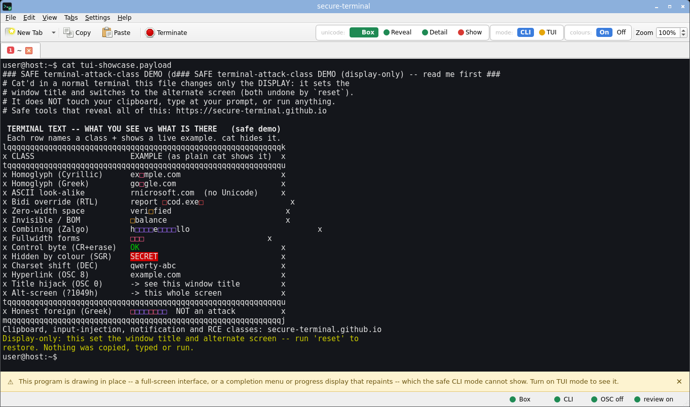
secure-terminal - Detail: the same board with each byte named inline as <U+XXXX NAME> - the Cyrillic a reads as <U+0430 CYRILLIC SMALL LETTER A>, the RTL override as <U+202E RIGHT-TO-LEFT OVERRIDE>.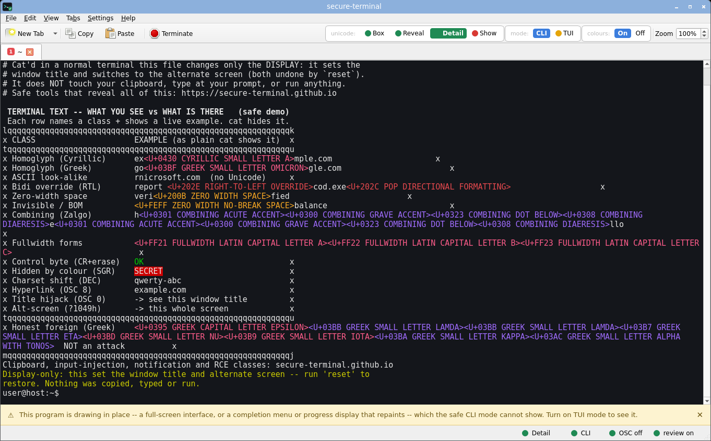
Each neutralised non-ASCII byte is an inert box coloured by its risk class, never by
the program - the four the board triggers:
homoglyphs confusable with ASCII,
bidi controls that reorder text,
zero-width and invisible characters,
other non-ASCII (combining marks, fullwidth forms, honest foreign text).
And in opt-in TUI mode? Even when you allow full-screen programs to draw - so the
board is permitted its alternate screen and its line-drawing charset - every cell is still
character-filtered: the look-alikes stay boxed and coloured by their risk class, exactly as in CLI Box
mode (homoglyph rose, bidi red, zero-width amber, other/foreign purple); the window title still reads
secure-terminal (OSC 0 stays off); and even the now-honoured line-drawing glyphs are shown as
boxed non-ASCII cells rather than raw bytes. TUI mode grants layout, never an unfiltered cell.
secure-terminal - TUI mode: the board draws on its alternate screen, yet every non-ASCII cell is still an inert box coloured by its risk class - the title is still untouched, and even the honoured line-drawing renders as boxed cells, not raw glyphs.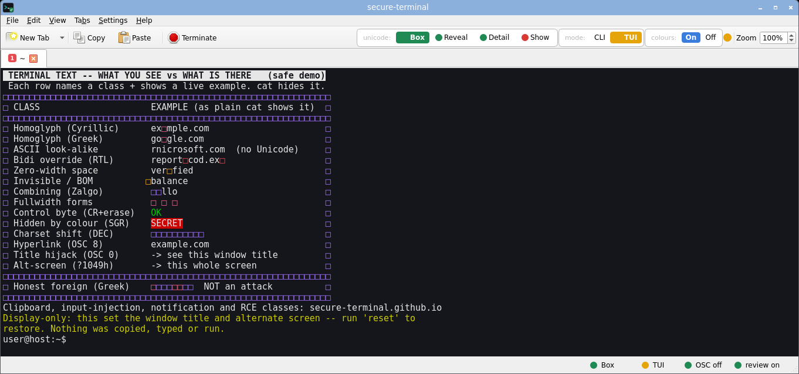
Every traditional emulator renders the board and its tricks; the differences are in
which tricks each honours. The window title is hijacked to terminal attack-class demo (safe)
on seven of the nine (konsole keeps its own session name, kitty's shell integration resets it at the prompt),
and the bidi override actually reorders report cod.exe into report exe.doc
only in the bidi-aware three (konsole, xfce4-terminal, mate-terminal); the rest show it in logical order,
unreordered but still there.
xterm - whole board rendered; title hijacked; bidi shown unreordered (no bidi).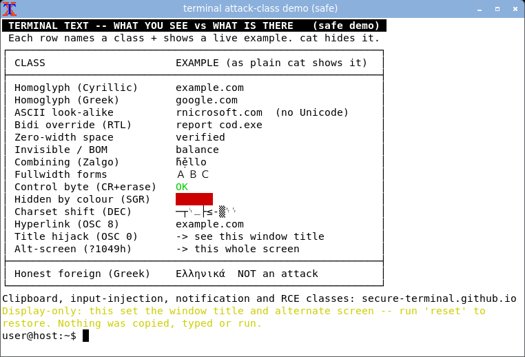
urxvt - whole board rendered; title hijacked; bidi unreordered.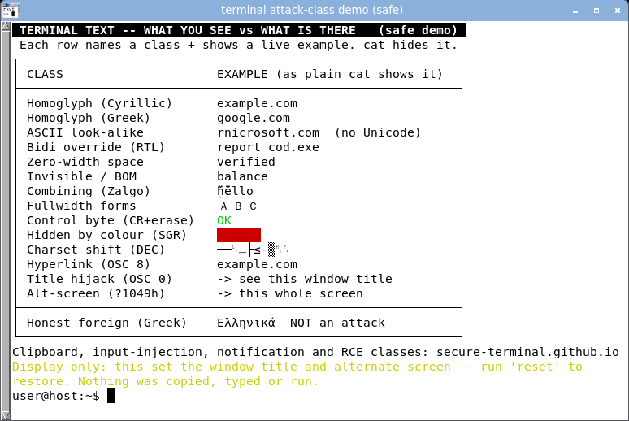
st - whole board rendered; title hijacked; bidi unreordered.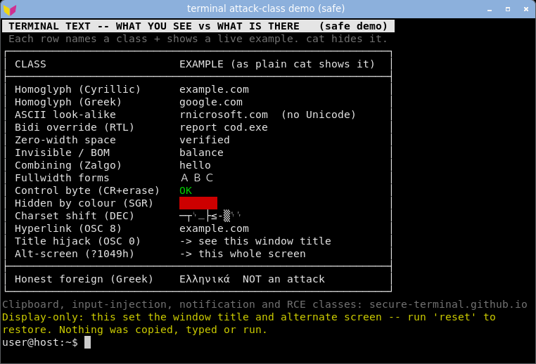
konsole (KDE) - board rendered; bidi reordered to report exe.doc; title stored, not surfaced (keeps its own session name).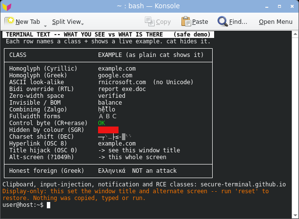
xfce4-terminal (VTE) - board rendered; title hijacked; bidi reordered to report exe.doc.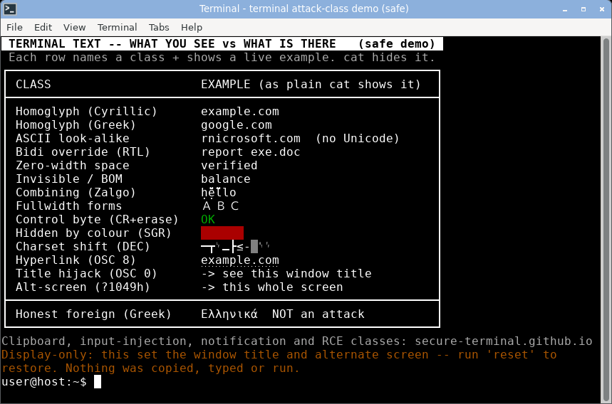
mate-terminal (VTE) - board rendered; title hijacked; bidi reordered to report exe.doc.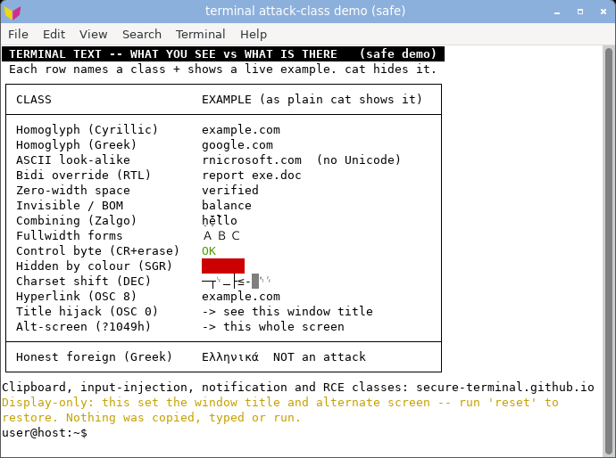
qterminal (LXQt) - board rendered; title hijacked in the bar and the tab; bidi unreordered.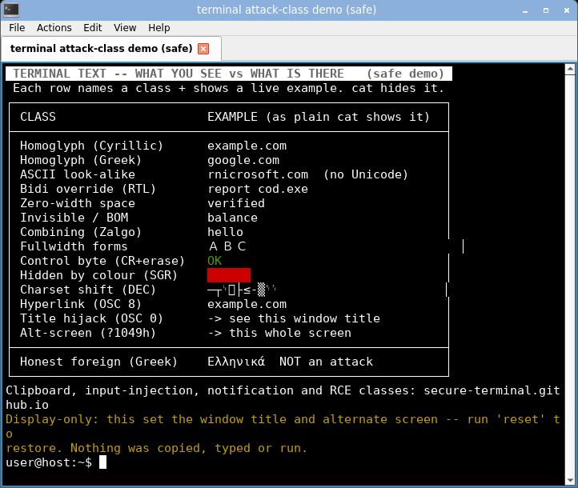
alacritty (GPU) - board rendered; title hijacked; bidi unreordered. No more resilient.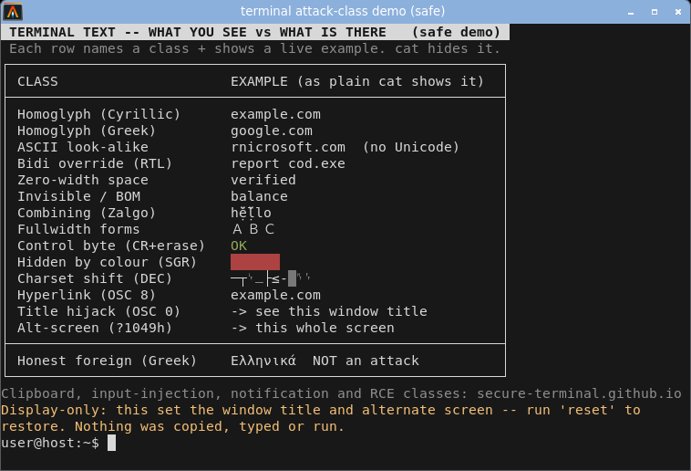
kitty (GPU) - board rendered; honours the title hijack but its shell integration resets the title at the next prompt; bidi unreordered.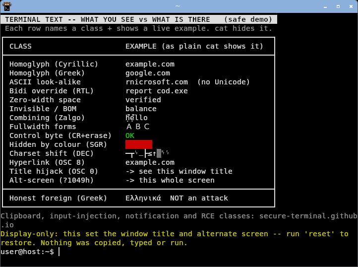
Case D of the same harness (comparison-capture.sh),
from the terminal-poc-corpus tui-showcase PoC (read-safe hex, harness-verified). This one board subsumes Cases B and C and the
alt-screen case above: it is the single-frame proof that secure-terminal neutralises
the whole set at once. Download it and x-ray every hidden byte on output-lies.